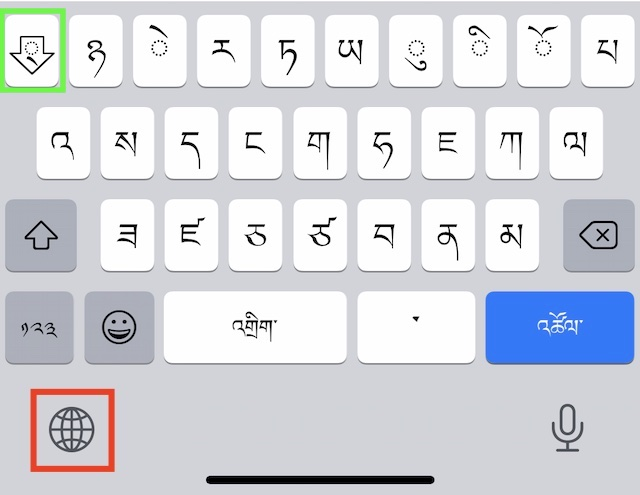

iOS (iPhone, iPad) and Tibetan
Contents
iOS (iPhone, iPad) and Tibetan#
Apple iOS comes with a Tibetan font and can display Tibetan in all apps without any configuration.
{kind=link}
Tibetan keyboard on mobile#
In order to type Tibetan, configure an additional input method for Tibetan:
Start the
Settingsapp.Select
General,Keyboard,Keyboards,Add New Keyboard...Search for
Tibetan, ‘Other iPhone keyboard’ will now offer to install a Tibetan keyboard.Keyboardsshould now display at least two keyboards: your default input method andTibetan.
iPad with hardware keyboard#
If you are using an iPad with an additional hardware keyboard, an additional step is required:

In the Settings app:
Select
General,Keyboard,Hardware keyboard. If you have correctly configure the Tibetan input method above, then you can now select the type of input method that is used for the hardware keyboard.Select
Tibetan, and activateTibetan - Wylie.
An iPad with hardware keyboard works now very much like a laptop with Tibetan support.
Tip
If you plan to work with Sanskrit diacritics, the ABC - Extended keyboard allows entering Sanskrit diacritics with your English QWERTY keyboard. See Working with Sanskrit.
Working with the Tibetan keyboard#
The on-screen Tibetan keyboard#
The globe-button (üåê), marked in red in the image above, is used to switch between your different keyboards.
Once the Tibetan keyboard is active, you enter Tibetan by simply pressing the corresponding Tibetan letters (some letters, like ཨ, ཞ, ཤ, ཆ are hidden behind the shift-key!).
Stacking has to done manually pressing the stack-key, marked in green in the keyboard-image above: in order to enter རྒྱུ་, you would type: ར, stack, ག, stack, ཡ and ུ (vowel-sign u).
The hardware keyboard (iPad with magic keyboard or similar)#
Usage of the hardware keyboard is very similar to macOS.
Use the globe-key (üåê) to switch between Tibetan-Wylie and other input methods. Alternatively (e.g. for keyboards without the globe-key), you can specify the CAPS-LOCK key to switch between input methods (see
settings,hardware-keyboard).Stacking works according to the EWTS-Rules: Use ‘+’ to force stacking (e.g. for Sanskrit).
Next steps#
Now you’re ready to install some Tibetan apps!